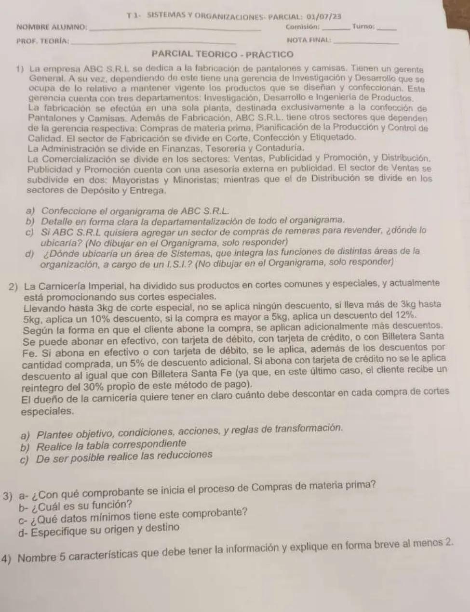
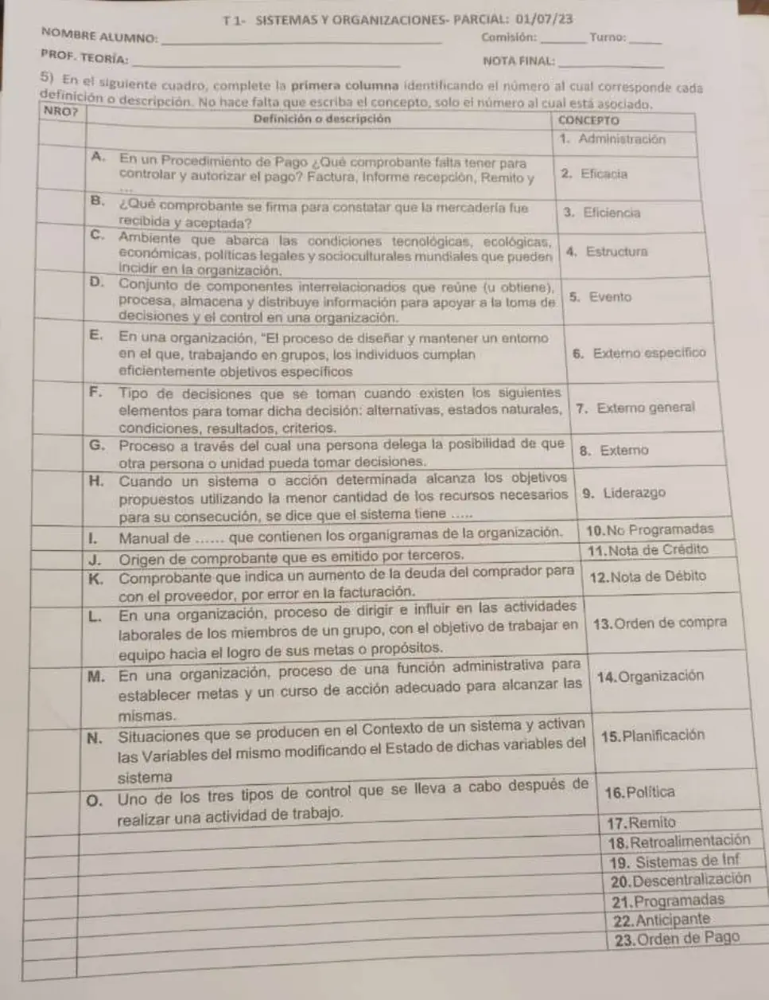

1° parcial, 01/07/2023
1° parcial, 01/07/2023
Enunciado




Preguntas con opciones
Salen de este examen, adaptadas. Dejalas para el final, porque las opciones pueden dar pistas.
- 1
¿Qué manual contiene el organigrama general de la organización y los de cada departamento?
Se tomó: 1° parcial 18/09/18 y 1° parcial 01/07/23, adaptada
El manual de estructura trae los organigramas. El de procedimiento ordena los procesos por departamento y el de políticas recoge las actitudes de la dirección.
- 2
Que la información sea «adecuada» significa que
Se tomó: 2° parcial 28/09/21 y 1° parcial 01/07/23, adaptada
La primera es objetiva, la tercera oportuna y la cuarta selectiva.
Propuesta de respuesta
Respuesta no verificada. La propuso Luta Studios con inteligencia artificial y ningún docente la revisó. Puede tener errores.
Ejercicio 1.a. Organigrama
La gerencia de la que dependen Fabricación, Compras de materia prima, Planificación de la Producción y Control de Calidad no tiene nombre en la minuta («la gerencia respectiva»). Va como Producción.
Tocá el dibujo para verlo en pantalla completa.
Ejercicio 1.b. Departamentalización
| Dónde | Qué agrupa | Tipo |
|---|---|---|
| Gerente General | Investigación y Desarrollo, Producción, Administración y Comercialización | Por funciones |
| Investigación y Desarrollo | Investigación, Desarrollo e Ingeniería de Productos | Por funciones |
| Producción | Fabricación, Compras de materia prima, Planificación de la Producción y Control de Calidad | Por funciones |
| Fabricación | Corte, Confección y Etiquetado | Por procesos |
| Administración | Finanzas, Tesorería y Contaduría | Por funciones |
| Comercialización | Ventas, Publicidad y Promoción y Distribución | Por funciones |
| Ventas | Mayoristas y Minoristas | Por tipo de mercado o cliente |
| Distribución | Depósito y Entrega | Por funciones |
No hay departamentalización por productos. Pantalones y camisas se hacen en una sola planta, y Corte, Confección y Etiquetado son las etapas del proceso.
Ejercicio 1.c. Compras de remeras para revender
En Comercialización. Comprar para revender es una actividad comercial, y el apunte dice que en una organización comercial el proceso de compras está en el área de comercialización. Compras de materia prima sigue en Producción, porque abastece a la fabricación.
Ejercicio 1.d. Área de Sistemas
Dependiendo directamente del Gerente General, al nivel de las otras gerencias. Integra funciones de distintas áreas, así que no puede quedar adentro de una. El apunte la pone entre las áreas de apoyo o servicios internos, y en Mintzberg cae en la categoría mixta de apoyo y tecnoestructura.
Ejercicio 2.a. Planteo
Objetivo. Determinar el descuento que se aplica en cada compra de cortes especiales.
En entrada limitada, el peso tiene tres rangos y obliga a tres condiciones. La forma de pago importa solo para saber si hay 5 % adicional.
| Condición | Valores | |
|---|---|---|
C1 | ¿Lleva hasta 3 kg? | S, N |
C2 | ¿Lleva más de 3 kg y hasta 5 kg? | S, N |
C3 | ¿Lleva más de 5 kg? | S, N |
C4 | ¿Abona en efectivo o con tarjeta de débito? | S, N |
| Acción | |
|---|---|
A1 | Aplicar un 10 % de descuento |
A2 | Aplicar un 12 % de descuento |
A3 | Aplicar un 5 % de descuento adicional |
A4 | No aplicar descuento |
Reglas de transformación. .
El reintegro del 30 % de Billetera Santa Fe es del método de pago, no un descuento de la carnicería. Por eso no es una acción.
Ejercicio 2.b. Tabla
Las columnas 1 a 6, 9, 10, 15 y 16 piden dos rangos de peso a la vez o ninguno. No pueden pasar.
| 1 | 2 | 3 | 4 | 5 | 6 | 7 | 8 | 9 | 10 | 11 | 12 | 13 | 14 | 15 | 16 | |
|---|---|---|---|---|---|---|---|---|---|---|---|---|---|---|---|---|
C1 | S | S | S | S | S | S | S | S | N | N | N | N | N | N | N | N |
C2 | S | S | S | S | N | N | N | N | S | S | S | S | N | N | N | N |
C3 | S | S | N | N | S | S | N | N | S | S | N | N | S | S | N | N |
C4 | S | N | S | N | S | N | S | N | S | N | S | N | S | N | S | N |
A1 | - | - | - | - | - | - | - | - | - | - | X | X | - | - | - | - |
A2 | - | - | - | - | - | - | - | - | - | - | - | - | X | X | - | - |
A3 | - | - | - | - | - | - | X | - | - | - | X | - | X | - | - | - |
A4 | - | - | - | - | - | - | - | X | - | - | - | - | - | - | - | - |
| Imposible | X | X | X | X | X | X | - | - | X | X | - | - | - | - | X | X |
Ejercicio 2.c. Reducciones
Si C1 es S, C2 y C3 no pueden tomar valor y quedan en «-». Lo mismo pasa con C3 cuando C2 es S, y cuando C1 y C2 son N el peso ya es de más de 5 kg. Las columnas imposibles se van y quedan 6 reglas.
| 7 | 8 | 11 | 12 | 13 | 14 | |
|---|---|---|---|---|---|---|
C1 | S | S | N | N | N | N |
C2 | - | - | S | S | N | N |
C3 | - | - | - | - | - | - |
C4 | S | N | S | N | S | N |
A1 | - | - | X | X | - | - |
A2 | - | - | - | - | X | X |
A3 | X | - | X | - | X | - |
A4 | - | X | - | - | - | - |
C3 queda en «-» en todas, así que se puede sacar. No admite más reducciones, porque las seis columnas tienen acciones distintas.
Ejercicio 3. Inicio de una compra
a) Con la nota de requisición (REQ).
b) Pedir los materiales que hay que reponer. Es un comprobante de control interno, no un respaldo contable.
c) La descripción de cada bien con sus características y la cantidad.
nota-requisición = nro-REQ + fecha + sector-solicitante
+ 1{ cod-materia-prima + descripción + cantidad }N
+ firma-solicitanted) Emisión y circulación internas. La emite quien necesita el bien, en el procedimiento del apunte Almacenes, y va a Compras.
Ejercicio 4. Características de la información
Clara, veraz, objetiva, oportuna y selectiva. El apunte suma ilustrativa, racional y adecuada.
- Oportuna. Está disponible en el momento en que se la necesita.
- Selectiva. Está dirigida solo a quienes les corresponde.
Ejercicio 5. Cuadro de conceptos
| Definición | Concepto |
|---|---|
| A | 13 Orden de compra |
| B | 17 Remito |
| C | 7 Externo general |
| D | 19 Sistemas de información |
| E | 1 Administración |
| F | 10 No programadas |
| G | 20 Descentralización |
| H | 3 Eficiencia |
| I | 4 Estructura |
| J | 8 Externo |
| K | 12 Nota de débito |
| L | 9 Liderazgo |
| M | 15 Planificación |
| N | 5 Evento |
| O | 18 Retroalimentación |
Respuesta no verificada. Puede tener errores.
Se armó con la página del 1° parcial (organigrama, departamentalización, dónde va compras, áreas genéricas, Mintzberg, comprobantes y manuales), la del 2° parcial (características de la información y evento) y la del 3° parcial (tabla de decisión, entrada limitada y compactación, y tipos de decisión).
Quedó en duda: El nombre «Producción» para «la gerencia respectiva» es una deducción, igual que dibujar la asesoría al costado de Publicidad y Promoción, porque ninguna página muestra cómo se dibuja un asesor. Distribución se puede leer también por procesos. La fila «Imposible» y quitar las columnas imposibles al reducir siguen lo que dice el apunte de las condiciones incompatibles, pero el apunte no trae un ejemplo con columnas imposibles. En entrada extendida serían 2 condiciones, peso con 3 casos y forma de pago con 4 (efectivo, débito, crédito y Billetera Santa Fe), 3 por 4, 12 columnas, que se reducen a las mismas 6. La F del cuadro describe la matriz por sus elementos (alternativas, estados naturales, resultados, criterios), y la matriz es «Plan viejo» en las páginas. En la A, el pago se autoriza con el legajo de compra, que incluye la orden de compra. En la B, el apunte dice que la nota de recepción se firma por cantidad y calidad, pero no está entre los conceptos, y el duplicado del remito lo firma el comprador en conformidad.
¿Cómo te fue?
Marcá cada tema del examen. Las preguntas con opciones ya se corrigieron solas.
- OrganigramaEl organigrama, en 1° parcial
- DepartamentalizaciónDepartamentalización, en 1° parcial
- Tabla de decisiónTabla de decisión (decisiones programadas), en 3° parcial
- ComprobantesClasificación de los comprobantes, en 1° parcial
- InformaciónSistema de información e información, en 2° parcial
- ConceptosLos conceptos en detalle, en 1° parcial